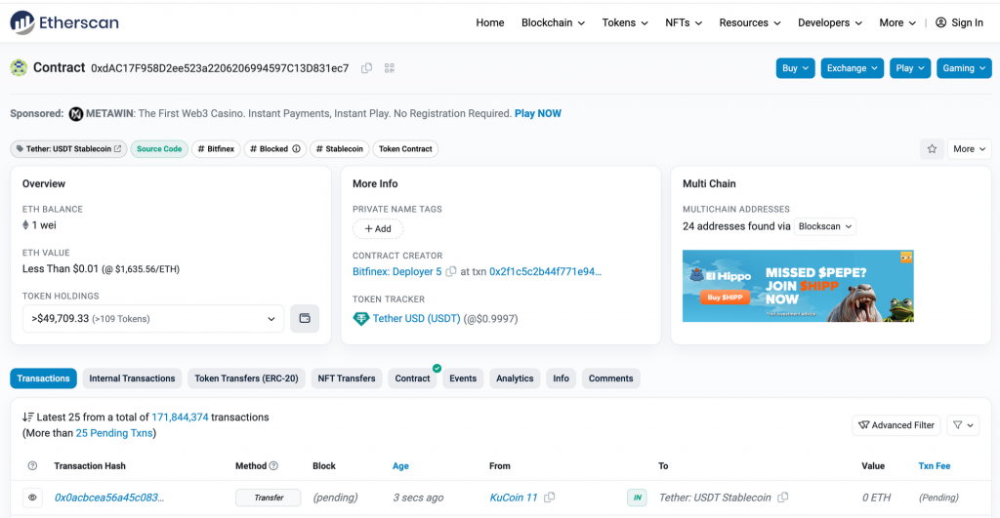
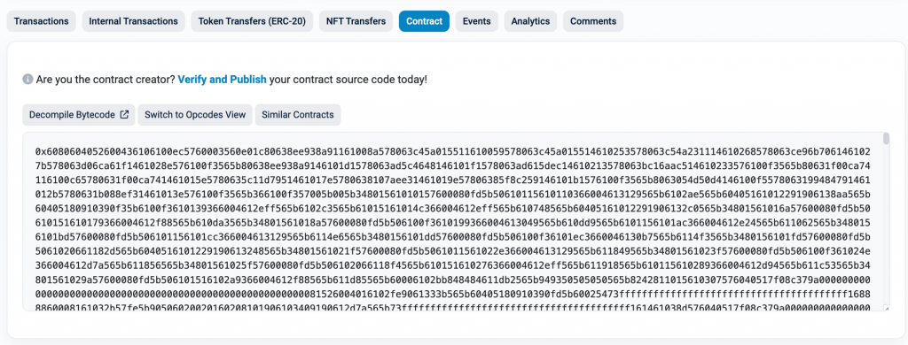
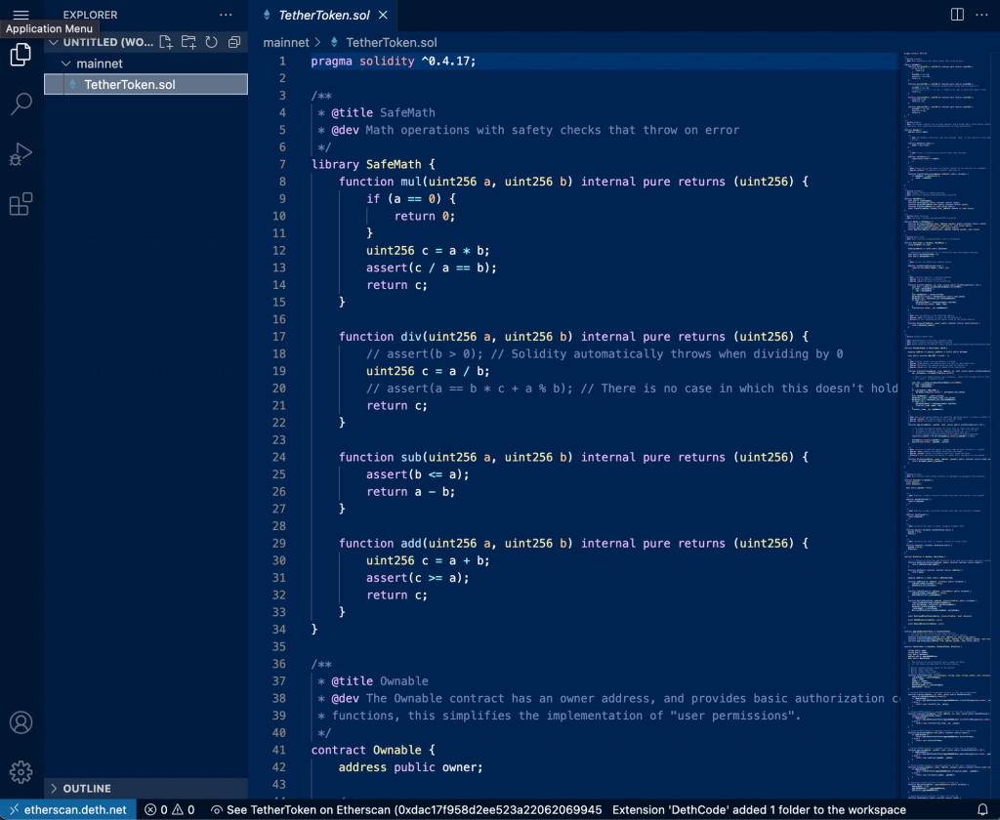

由於 Web3 與前端的主題暫時告一段落（後續會再有進階的 Web3 前端主題），作為到後端主題的銜接，如果對智能合約相關概念有更多理解的話會很有幫助，像前面我們有初步了解 ERC-20 的標準，不過還沒深入了解裡面的機制。因此今天會先從智能合約的開發語言與框架開始介紹，透過 ERC-20 作為範例講解一個代幣的實作邏輯，再介紹 NFT 的概念與機制。由於本系列文章不會專注於教大家如何寫智能合約，今天會是系列中唯一講到智能合約開發的。
智能合約的定義其實很單純，如同 Ethereum 官方文件描述的：
A “smart contract” is simply a program that runs on the Ethereum blockchain. It’s a collection of code (its functions) and data (its state) that resides at a specific address on the Ethereum blockchain.
所以其實嚴格來說他不是合約也沒那麼智能，Vitalik （以太坊的創始人）就提過應該要把它取名為 Persistent Scripts，不過既然已經廣為流傳，大家還是習慣叫他智能合約。以下是一個由 Solidity 寫的最簡單的智能合約，可以做到用 set 把一個資料存在這個合約上，並用 get 拿到這個資料。
[code] // SPDX-License-Identifier: MIT pragma solidity ^0.8.0;
contract SimpleStorage {
uint256 private storedData;
function set(uint256 _data) public {
storedData = _data;
}
function get() public view returns (uint256) {
return storedData;
}
}[/code]
最廣為人知的智能合約開發語言就是 Solidity，他的寫法類似 Javascript 所以還算好上手。除了 Solidity 外也還也不少其他語言：
更多關於這些語言的比較可參考：Solidity vs. Vyper: Which Smart Contract Language Is Right for Me?
再來是開發框架的簡介，以下幾個都是開發 Solidity 可以使用的框架：
關於這四個開發框架實際應用的方式，可以參考 Remix vs Truffle vs Hardhat vs Foundry。我個人學習的開發框架主要是 Hardhat 跟 Foundry，因為我比較喜歡學習新的框架跟體驗它的好處，讀者可以挑有興趣的框架學習，網路上都有大量相關的資源，或是從官方文件一個一個爬文就是很好的起點。
至於 Vyper 可以使用 brownie 來輔助開發跟測試，有學習 Vyper 的讀者也可以一併學。
接下來選一個 ERC-20 Token 我們實際來看他智能合約的實作。到 Etherscan 上搜尋 USDT 這個幣，就可以找到他的智能合約地址：0xdAC17F958D2ee523a2206206994597C13D831ec7

點擊中間的 Contract Tab 就可以看到這個智能合約完整的程式碼。因為所有智能合約都是在區塊鏈上，所以合約的執行邏輯也是公開透明的。只是會有智能合約是否開源的區別，像 USDT 的合約程式碼就有開源，任何人都可以查看是否有漏洞，智能合約開發者如果希望獲得社群的信任，通常就會把合約程式碼開源出來。至於沒有開源的合約會長得像這樣：

是一串看不懂的 bytecode，當然這個智能合約的執行邏輯還是公開透明的，因為 bytecode 就包含所有合約執行的邏輯，但這樣的缺點是不可讀也很難做審計，所以主要是用在要保護關鍵的邏輯不被別人知道時，例如一些套利程式的合約，或是一些惡意的合約可能刻意藏漏洞在裡面不讓別人發現。
回到 USDT 的合約，往下滑可以看到完整的程式碼，或是點擊 Read Contract
及 Write Contract
分別可以看到這個智能合約提供哪些讀取跟寫入方法。而因為在 Etherscan
上查看程式碼比較不方便（有時程式碼會分成多個檔案不好查詢），推薦使用 deth code viewer
來看合約的程式碼。只要把原本的智能合約網址中 etherscan.io
改成 etherscan.deth.net 就可以了，也就是把 https://etherscan.io/address/0xdac17f958d2ee523a2206206994597c13d831ec7
改成 https://etherscan.deth.net/address/0xdac17f958d2ee523a2206206994597c13d831ec7
，就可以看到以下類似 VS Code 的畫面

deth code viewer 也支援許多主流的 EVM chain explorer（支援列表），非常方便。
裡面可以看到一些關鍵的 ERC-20 function 的實作，包含
transfer(), approve(),
transferFrom(), balanceOf(),
allowance() 等等，先挑最簡單的 balanceOf()
來看
[code] /** * @dev Gets the balance of the specified address. * @param _owner The address to query the the balance of. * @return An uint representing the amount owned by the passed address. */ function balanceOf(address _owner) public constant returns (uint balance) { return balances[_owner]; }
[/code]
可以看到一個地址的 balance 就是直接從 balances 這個 map
中取得，他的定義是
[code] mapping(address => uint) public balances;
[/code]
因此 balances 這個 map 就是一般 ERC-20
合約最核心的資料，儲存所有地址的餘額。所以就很好理解
transfer() 裡做的事：
[code] /** * @dev transfer token for a specified address * @param _to The address to transfer to. * @param _value The amount to be transferred. */ function transfer(address _to, uint _value) public onlyPayloadSize(2 * 32) { uint fee = (_value.mul(basisPointsRate)).div(10000); if (fee > maximumFee) { fee = maximumFee; } uint sendAmount = _value.sub(fee); balances[msg.sender] = balances[msg.sender].sub(_value); balances[_to] = balances[_to].add(sendAmount); if (fee > 0) { balances[owner] = balances[owner].add(fee); Transfer(msg.sender, owner, fee); } Transfer(msg.sender, _to, sendAmount); }
[/code]
先忽略收取手續費的部分，最核心的邏輯就只是把 msg.sender
（也就是發送交易的地址）的餘額減少 _value，並讓
to 地址的餘額增加 _value 而已。
再來介紹 approve(), allowance(),
transferFrom()方法。因為有時在操作智能合約時，可能會遇到需要讓另一個智能合約把我的
USDT 轉走的情況，例如當我想在 Uniswap 上用 USDT 換成 ETH，其實我是跟
Uniswap 的合約互動，過程中 Uniswap 的合約會主動把我的 USDT
轉走並轉對應數量的 ETH 給我，因此才需要 transferFrom()
方法。來看一下裡面的實作：
[code] /** * @dev Transfer tokens from one address to another * @param _from address The address which you want to send tokens from * @param _to address The address which you want to transfer to * @param _value uint the amount of tokens to be transferred */ function transferFrom(address _from, address _to, uint _value) public onlyPayloadSize(3 * 32) { var _allowance = allowed[_from][msg.sender];
// Check is not needed because sub(_allowance, _value) will already throw if this condition is not met
// if (_value > _allowance) throw;
uint fee = (_value.mul(basisPointsRate)).div(10000);
if (fee > maximumFee) {
fee = maximumFee;
}
if (_allowance < MAX_UINT) {
allowed[_from][msg.sender] = _allowance.sub(_value);
}
uint sendAmount = _value.sub(fee);
balances[_from] = balances[_from].sub(_value);
balances[_to] = balances[_to].add(sendAmount);
if (fee > 0) {
balances[owner] = balances[owner].add(fee);
Transfer(_from, owner, fee);
}
Transfer(_from, _to, sendAmount);
}[/code]
這個方法就是由發送交易的人把 _from 地址身上的 USDT 轉給
_to 地址。一樣先忽略計算 fee
的邏輯，由於不可能任何人都能把其他人的 USDT 轉走，第一行就是先去
allowed map 中看 _from 地址允許
msg.sender 使用多少 USDT，並在後面的
_allowance.sub(_value) 這行驗證 _value
是否小於等於 _allowance ，有的話就把他扣掉並設成新的
allowed 值（否則他會自動 throw exception
讓交易失敗）。所以只要我曾經允許過別的地址轉走我多少
USDT，那個地址隨時可以呼叫 transferFrom() 來把我的 USDT
轉走。因此通常只會允許智能合約來轉走自己的 USDT
而不會允許終端的錢包地址（Externally Owned Account, 又稱
EOA），因為智能合約只會在特定的邏輯中呼叫 transferFrom()
方法，不會隨便呼叫。
至於如何設定我要授權給該地址使用多少我的 USDT，就必須呼叫
approve() 方法：
[code] /** * @dev Approve the passed address to spend the specified amount of tokens on behalf of msg.sender. * @param _spender The address which will spend the funds. * @param _value The amount of tokens to be spent. */ function approve(address _spender, uint _value) public onlyPayloadSize(2 * 32) {
// To change the approve amount you first have to reduce the addresses`
// allowance to zero by calling `approve(_spender, 0)` if it is not
// already 0 to mitigate the race condition described here:
// https://github.com/ethereum/EIPs/issues/20#issuecomment-263524729
require(!((_value != 0) && (allowed[msg.sender][_spender] != 0)));
allowed[msg.sender][_spender] = _value;
Approval(msg.sender, _spender, _value);
}[/code]
可以看到當我呼叫 approve() 時就是去改動
allowed map，把這個資訊存進合約供未來 _spender
可以呼叫 transferFrom()。而查詢我對特定地址的 USDT
授權數量則是使用 allowance()
[code] /** * @dev Function to check the amount of tokens than an owner allowed to a spender. * @param _owner address The address which owns the funds. * @param _spender address The address which will spend the funds. * @return A uint specifying the amount of tokens still available for the spender. */ function allowance(address _owner, address _spender) public constant returns (uint remaining) { return allowed[_owner][_spender]; }
[/code]
以上講解了 ERC-20 合約中最關鍵的幾個方法，而 USDT
還有其他關於黑名單的變數與方法（addBlackList(),
isBlackListed
等等）是用來封鎖駭客或是洗錢者的地址，他們的程式碼就留給讀者自行理解。
在智能合約中除了變數與方法，還有一個概念沒有介紹到，也就是
Event。例如 transferFrom()
方法的最後一行其實會發出一個像這樣的 event:
Transfer(_from, _to, sendAmount)
，在智能合約裡可以找到他的定義：
[code] event Transfer(address indexed from, address indexed to, uint value);
[/code]
而 Transfer 也是 ERC-20 標準中定義的 Event。Event
可以用來方便查詢關於一個智能合約的歷史交易中，大家感興趣的事件。像當我想列出我的地址過去所有
USDT 的轉帳歷史時，如果要一個一個查詢我過去有跟 USDT
合約互動的紀錄會很麻煩，而且這還沒考慮到別人用
transferFrom() 把我 USDT 轉走的情況，就變成要看完所有跟
USDT 合約互動的交易才不會遺漏，而現在這些交易已經高達 1.7 億筆！
有了 Event 的機制，當 USDT 合約中有發生任何 Token Transfer 都發出
Transfer event 的話，等於是讓以太坊節點幫我們做
indexing，讓任何人可以直接 filter 出這個合約中特定內容的 event
有哪些。例如我想知道從我地址轉入或轉出 USDT 的所有記錄，就只要 filter 出
USDT 合約上 from 或是 to 的值等於我的地址的
Transfer Event 就可以了。後續會在後端的內容中介紹如何拿到 Token Transfer
的資料。
在 Etherscan USDT 介面上的 Events Tab 可以看到近期這個智能合約發出的 Events，以及每筆交易的 Logs Tab 可以看到該筆交易觸發了哪些智能合約中的哪些 Event（例如上次轉出 UNI token 的交易 Logs）。
介紹完了 ERC-20 Token 接下來就能介紹更多的代幣標準，包含 ERC-721 及 ERC-1155。這裡就要講到 Fungible Token（FT） 跟 Non-Fungible Token（NFT） 之間的差別。
Fungible Token 又稱同質性代幣，前面介紹的 ERC-20 Token 就是屬於 Fungible Token，因為每一單位的 USDT 都是一樣的，如果 A 跟 B 都有 1 USDT，A 把他的 1 USDT 轉給 B，B 就會有兩個 USDT，代表 A 身上的 USDT 跟 B 身上的 USDT 是同質、沒有差異的。Fungible Token 的特性就是可以任意合併或拆分，適合用來實作貨幣的智能合約。
與之相對的就是 Non-Fungible Tokens，又稱非同質性代幣，代表每個 Token 都是獨一無二、不同質的。例如知名的 Bored Ape Yacht Club (BAYC) NFT 就是由一萬張 Ape 的圖片組成，每個 Ape 都有他對應的 ID、圖片、特色，因此就算我有兩個 BAYC NFT 他們也無法合併，而是兩個分開的 Token 並且可以各自被交易、轉移。NFT 也是無法分割的，沒辦法像 FT 一樣轉出 0.5 個 NFT。最知名的 NFT 標準包含 ERC-721 與 ERC-1155，常被用來實作像數位收藏品、遊戲道具、抽獎券等等可以對應到現實世界中「物品」或「資產」的概念。科普的介紹推薦看老高關於 NFT 的介紹影片。
至於 ERC-721 跟 ERC-1155 有怎樣的差別，簡單來說 ERC-721 代表的是每個 Token 都是獨一無二的 NFT，如數位藝術品每一件都是獨一無二的。ERC-1155 則是代表有部分 Token 是一樣的 NFT，例如遊戲中可能會有不同種類的藥水，但每種藥水本身是同質的沒有任何差異。背後的技術細節可以參考 ERC-721 及 ERC-1155 的介面定義，可以更了解這兩個標準的合約支援的操作。
今天我們介紹了關於智能合約的開發、ERC-20 的實作與智能合約的 Event，以及在以太坊上實作 NFT 的兩個標準，接下來就會正式進入 Web3 與後端的開發了，會先延續前一天的錢包登入功能把它實作完成。